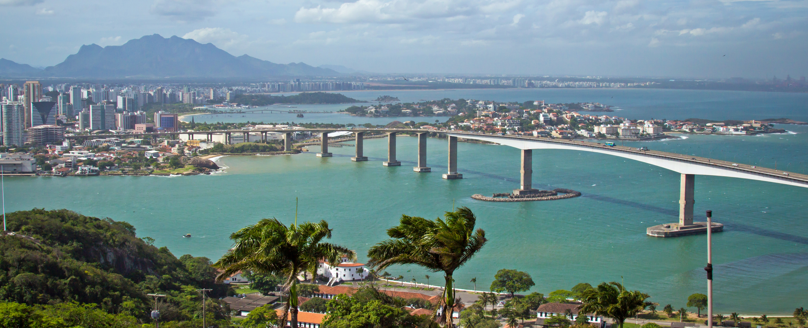

Bem-vindo à cidade de Vitoria!

Vitoria é a capital do estado do Espirito Santo, localizada na região sudeste do Brasil. A cidade é conhecida por suas belas praias, como a Praia de Camburi e a Praia da Costa, além de sua rica história e cultura.
Vitoria também é um importante centro econômico e industrial, com destaque para os setores portuário, metalúrgico e de serviços. A cidade possui uma infraestrutura moderna, com bons hospitais, escolas e universidades.
para mais informações sobre a cidade de Vitoria, você pode visitar o site oficial da prefeitura: Prefeitura de Vitoria